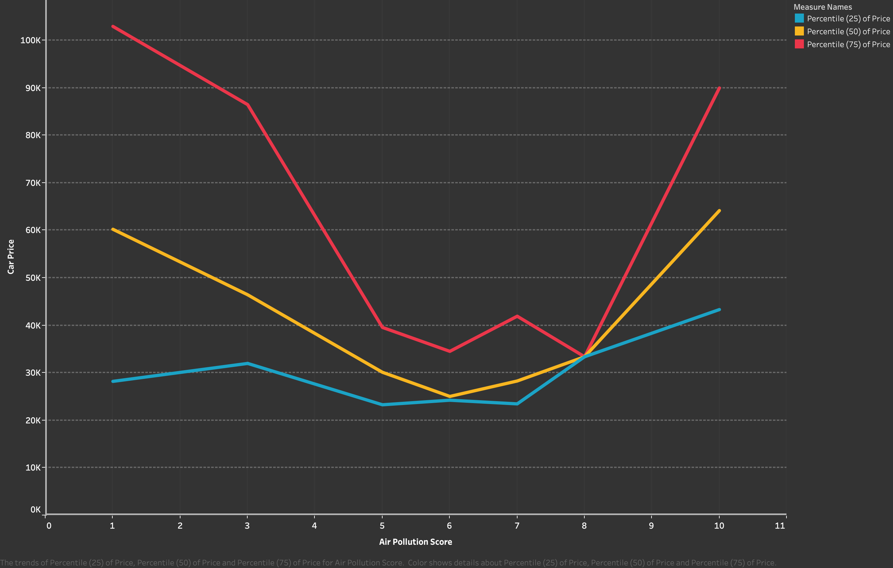

Note: we tried to make this tool look as nice as possible within the time frame that we have, but there's still a lot of work on that front. Please forgive the look.
In the following section, give us your preferences, and we will tell you what car is best for you.
I spend about % of my time driving on the highway versus driving in the city.
Mileage is different in the city versus the highway to due more fuel being expended in frequent breaking and accelerating
I about my car's effect on the environment.
Vehicle's tailpipes cause emissions that contribute to local and regional air pollution, creating problems such as smog, haze, and health issues.
2 wheel-drive means engine power is routed to either the front two or back two tires and is the most common.
4 wheel-drive provides engine power to all four tires. It is optimized for off-roading situations.
The above graph shows that as the pollution level of a car decreases, the cost of the car decreases on average up until the car starts having extremely low levels of pollution (i.e., high pollution score), at which the average price of the car increases once again.
Air Pollution to Price Comparison This graph demonstrates the same trends as the previous one.
In this section, we simply want to show what we had hoped that our tool would do. So, if you chose that that you
- spent 75% of your driving on the highway,
- cared about the effect of your car on the environment,
- were looking for a midsized car,
- prefered to have a 2-wheel-drive,
- and were looking to spend between $0 and $45,000,